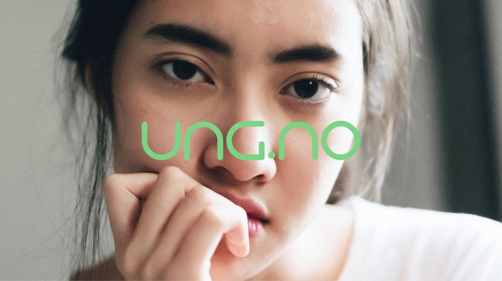
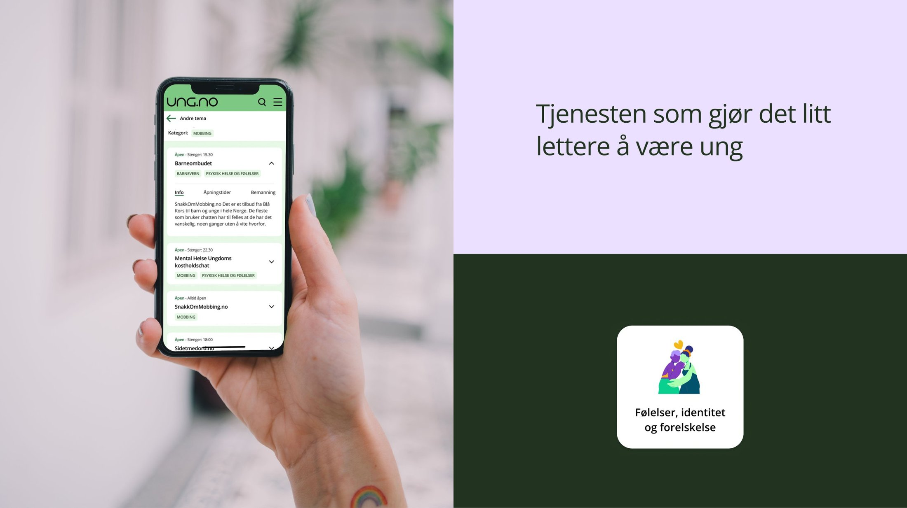
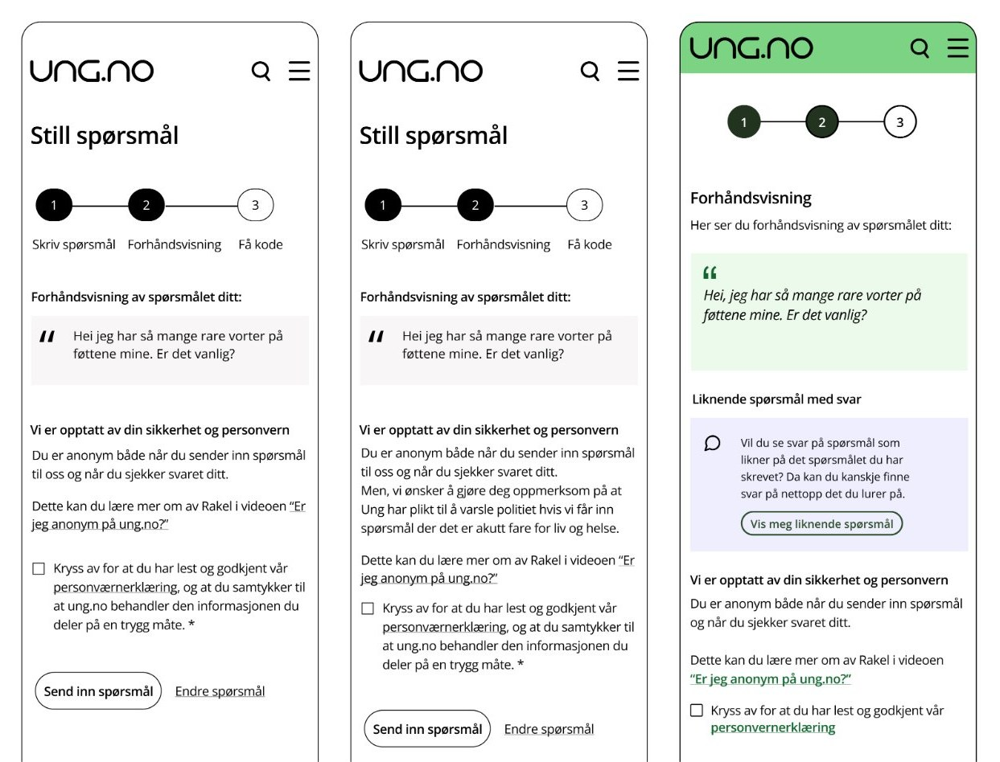
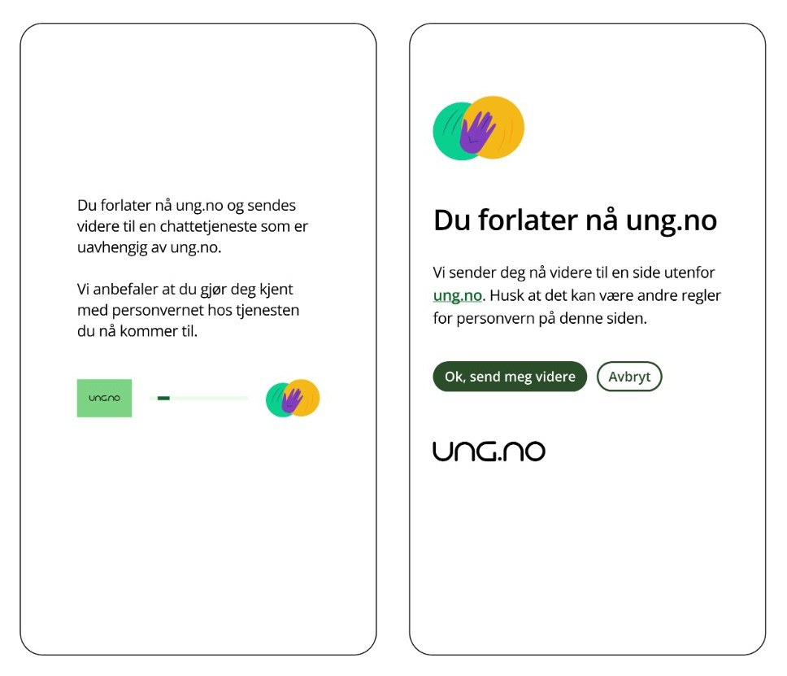
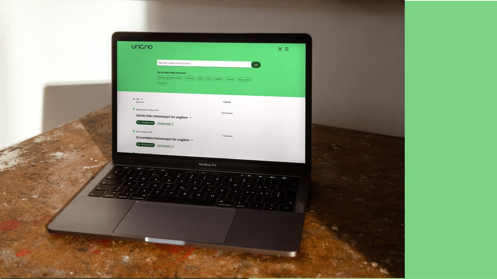
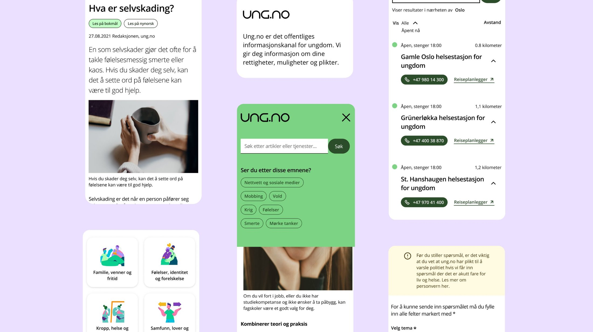

Case 02
ung.no og DigiUng
En samlet digital kanal for ulike digitale tjenester for barn og unge. Oppdraget bestod i å designe en brukervennlig opplevelse av dette på ung.no.
- Kunde
- ung.no (Bufdir)
- Min rolle
- Produktdesigner
- Team
- Produkteier, prosjektleder, utviklere, merkevaredesigner og fagspesialister
- Når
- april 2022 – oktober 2023

Ung.no henvender seg til ungdom i alderen 13–20 år, og tilbyr nyttig og kvalitetssikret informasjon om alt de er opptatt av og lurer på i sin fase i livet.
Ett av tilbudene på ung.no er en spørsmål-og-svar-tjeneste, hvor de unge kan stille spørsmål anonymt og få svar fra et profesjonelt fagpanel. I 2022 ble Ung utvalgt til å være den primære kanalen for digital informasjon, dialog og tjenester til barn og unge, på tvers av sektorer og tjenestenivå, gjennom realiseringen av DigiUng-programmet.
Hos Ung fikk jeg være med å utforme brukeropplevelsen til ungdommene, både gjennom DigiUng-arbeidet og som lead produktdesigner i utviklingsteamet.

Designprosessen og problemstillinger
En av problemstillingene jeg støtte på, og som gjorde inntrykk på meg, var at ungdommene var redde for å bli identifisert som brukere av tjenesten.
Det var tilfeller hvor ungdommer hadde sendt inn spørsmål til Ung, men ikke turte å sjekke svaret i frykt for at noen skulle finne ut hvem de var.
Det var en utfordring å kommunisere samtykketekster og varslingsplikt samtidig som de skulle oppleve at de var anonyme.
Redaktøren til Ung og jeg jobbet ut mange varianter av tekster for å finne en måte å gjøre ungdommene trygge på at de var anonyme nok.

I arbeidet med DigiUng oppstod det en utfordring da ung.no skulle sende ungdommene til hjelpetjenester utenfor sitt eget nettsted. De hadde utviklet en redirect-side som skulle opplyse om at Ungs regler for håndtering av personvern ikke lenger gjaldt så fort de kom til et annet nettsted.
Løsningen de hadde oppfylte ikke kravene til universell utforming, fordi siden hadde en tidsbegrenset visningstid.
Jeg testet tekstene på ungdommer og fant ut at de verken forstod det de leste eller rakk å lese alt. Skjermleseren fikk heller ikke nok tid til å lese teksten.
Løsningen for redirect-siden var å legge til knapper hvor de aktivt tok et valg om å gå videre. Da hadde de også kontroll over hvor lang tid de trengte til å lese teksten.

Samarbeid
I arbeidet med DigiUng var det viktig å involvere og knytte sammen ressurser med relevant kunnskap (produkteiere fra Hdir og ung.no, utviklere, helsefagarbeidere med flere) som kunne påvirke brukeropplevelsen og retningen designet kunne ta.
Jeg utarbeidet skisser som vi tok utgangspunkt i da vi drøftet ulike muligheter og rammer vi måtte forholde oss til.
Jeg bidro også i utarbeidelsen av designsystemet til Ung, med designtokens og variabler, i tett samarbeid med merkevaredesigneren som hadde lead på UI. Utviklerne var også tett involvert i avgjørelser og i hvordan produktet skulle løses.

Resultat
Prosjektet vant «Bedre stat»-prisen i 2023.
Juryen skriver at DigiUng kan vise til konkrete resultater med helhetlige tjenester og kraftig forbedret brukeropplevelse. Tiltaket leverer lett tilgjengelig, kvalitetssikret informasjon og veiledning og gode tjenester til sine brukere.

Leveranse
- Leveranser
-
- Designmetodikk og prosesser
- Designskisser
- Forankring
- Prototyper
- Komponentbibliotek
- Designtokens og variabler
- Universell utforming
- Personvern
- Smidig utvikling
- Verktøy
-
- Figma
- Miro
- Azure DevOps
- Optimizely
- Axe DevTools
- IBM Equal Access Accessibility Checker
- Siteimprove